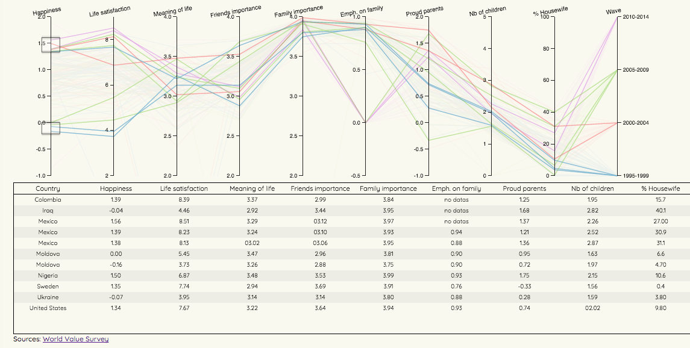
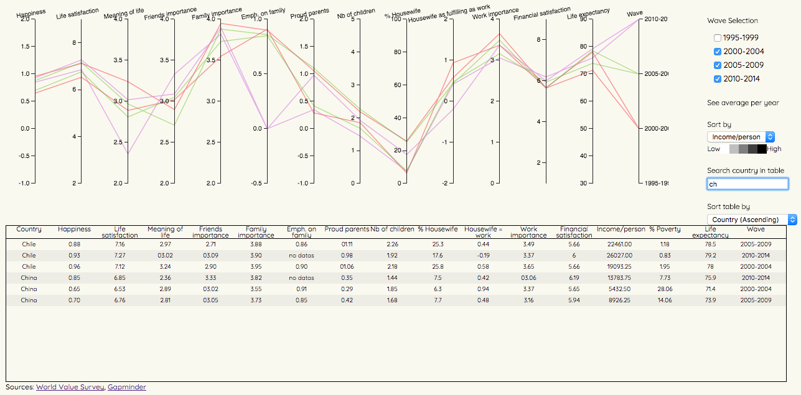

World Value Survey allows you to look for datas for different « waves ».
Depending on the wave chosen, a list of countries shows up. The navigation forces us to go back to find countries that are available throughout different waves.
After selecting the countries, it brings up the list of surveys conducted.
That list can be filtered by variable and title. Unfortunately, they can change from one wave to another.
The results can then be presented in tables or in graphics, with different options.
Timelines offer the possibility to visualize either the answers of one country throughout the years, or the evolution of one answer for all countries, but not the combination of both.
It is possible to cross the results with another variable but the options are quite limited as no more than two variables can be crossed together.
After looking through that tool, the last four waves have been selected for the visualization, as they had the most countries available.
Visualization 1: Influence of family on happiness
People have, overall, always been quite happy. One major factor that can influence is family.
Indeed, most people consider family as very important, if not the most important.
As the importance of family grows, how does it impact the feeling of happiness ?
The following visualization shows 34 countries through the years (from 1995 to 2014).
NB: The missing datas were by default put to 0; hence the dropping lines.
The tool can show all the values for all the countries and for the four selected waves, and the details of the datas are presented in the following table.
Hovering on the table’s rows highlights the different curves related to the selected country, making it possible to see the changes throughout the years.
Brushing on the axis allows the selection of one particular interval of interest, and the table updates along.
Multibrushing on the axis also allows the comparison between different intervals. Happiness seems to go in hand with life satisfaction.
It can also be used to select waves rather than displaying the four of them.

Changes to that tool included actually taking one wave off the graph to allow for a clearer overview.
It is also possible search for a country in the table instead of scrolling throught it.
From Gapminder, a few variables have been added both as axes for a new element of comparison, and as a color dimension to the lines (income/person and % poverty), so the higher the darker.
It seems that the higher the income, the more happy one becomes.

Finally, the averages of each variables for the four waves have been added to show how the overall mentality evolved throughout the years.
Visualization 2 : Family vs. work: influence on happiness
In addition to family, work is probably what occupies most of our time. Does it influence happiness as much as family does ?